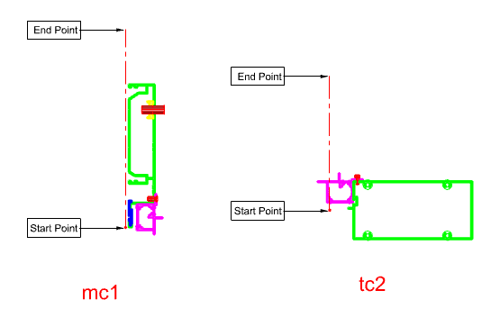

CT1
Center Line은 Section Profile의 기준선입니다. 프로그램은 레이어가 Center1인 Line을 중심선으로 인식합니다.
단면 요소(Surface·Block·PolyLine)의 배치 위치와 방향 기준이 되는 중심선을 정의할 때 사용합니다. Center1 레이어의 Line을 프로그램이 중심선으로 인식하므로, 시작점·끝점 방향을 맞춰 두면 단면 요소가 올바른 방향으로 정렬됩니다.
CT1 명령 또는 레이어 설정으로 Line을 Center1 레이어에 둡니다.
| 항목 | 설명 |
|---|---|
| 필수 레이어 | Center1 |
| 시작점 | Wire Frame에서 Section이 놓이는 위치를 나타냅니다. |
| 끝점 | Wire Frame에서 Section 방향점을 나타냅니다. |
| 명령어 | 설명 |
|---|---|
Pname | Section Profile 정보를 입력합니다. |